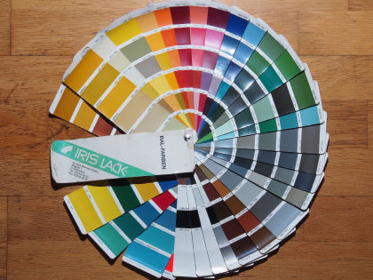
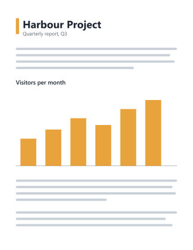
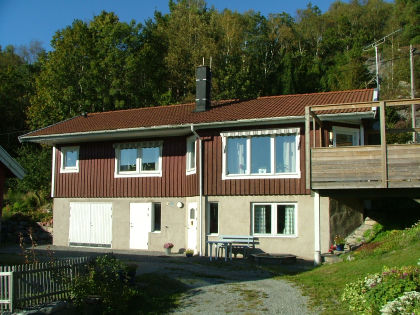
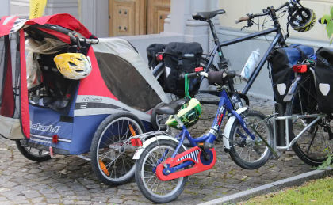
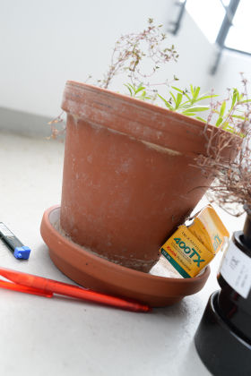
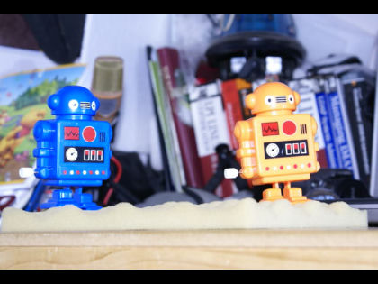
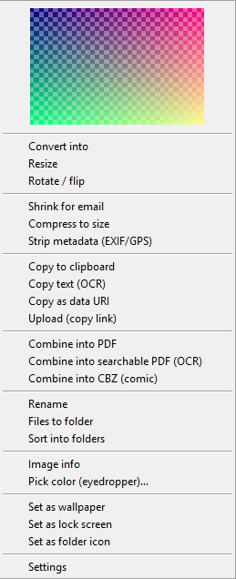
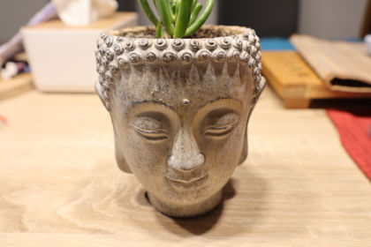

01 / SEE
Thumbnails for the files Windows skips
Camera RAW, HEIC, JPEG XL, PDF, Office files, Photoshop, Blender, CAD previews, comics and video frames. Pictures where there were grey icons.
For Windows 10 and 11
Thumbwright teaches File Explorer to draw previews for 315 file types, from camera RAW and HEIC to PDF, Photoshop and CAD, and adds a right-click menu to convert, shrink and read text out of images. Free, open source, and it never touches the internet.

Colour fan.ORF
Quarterly report.PDF
Red house.RAF
Bicycles.JXL
Flower pot.NEF
Robots.ARWThree things you'll use
No new app to learn. Thumbwright lives inside Explorer and gets out of the way.
01 / SEE
Camera RAW, HEIC, JPEG XL, PDF, Office files, Photoshop, Blender, CAD previews, comics and video frames. Pictures where there were grey icons.
02 / CHANGE
HEIC to JPEG, a folder of photos to 1920 pixels, a picture under 1 MB for email. JPEG rotation is lossless, and your EXIF data and colour profile come along.
03 / READ
Copy the text from a screenshot or a scan with Windows' own OCR. Merge pages into one PDF, a searchable PDF or a comic book (.cbz).
The right-click menu
Right-click a file, or a whole selection, and pick Thumbwright. It opens a menu with a preview of your picture on top and only the tools that make sense for what you selected.
Where is it? On Windows 11, right-click and choose Thumbwright, or hold Shift while you right-click. Every tool also runs from a terminal as twctl.

315 file types
Type a file extension or a whole file name. The answer comes from the same table Thumbwright uses.
Try , , or .

Every picture on this page was made by Thumbwright from public-domain sample files. Sources and licences.
Safe and private
No component opens a network connection: there is no upload, telemetry or update check.Thumbwright security policy
Nothing leaves your PC. No account, no cloud, no telemetry. OCR uses the engine already built into Windows.
Risky decoders run in a separate locked-down process with memory and CPU limits. If one fails, only that process dies.
Every change to the registry is journaled. Thumbwright never replaces another program's handler, and uninstalling removes exactly what it added.
The installer and binaries are Authenticode-signed, releases list SHA-256 checksums, and all the source is GPL-3.0 on GitHub.
Install
Windows 10 (version 2004 or later) or Windows 11, 64-bit. Installing for all users needs administrator rights.
Download Thumbwright-<version>-x64.msi from the latest release, double-click it and you are done. Signed. Checksums are on the release page.
Get the latest MSI# or silent, for IT
msiexec /i Thumbwright-<version>-x64.msi /qn
Already use Chocolatey? One line installs it, and one line updates it later.
choco install thumbwright
# later
choco upgrade thumbwright
Not available yet. Until it is, use the MSI or Chocolatey. This page will say so when that changes.
Thumbwright decodes HEIC and HEIF photos (iPhone, Android, cameras) itself, with no Microsoft Store codec. If a file uses a variant it cannot read, it tries Windows' own codecs when you have the HEIF Image Extensions and HEVC Video Extensions installed. AVIF and AVCI pictures are decoded by Windows only, so they need the Store's AV1 and HEIF extensions. Run twctl doctor and it tells you which ones are missing. Camera RAW, JPEG XL and most other formats need nothing extra.
Questions
HEIC is decoded by Thumbwright itself, so the Microsoft Store codecs are not needed. A missing thumbnail usually means the file is damaged, uses a variant the built-in decoder cannot read (then Windows' HEIF Image Extensions and HEVC Video Extensions help, if installed), or another program owns the .heic type, see the next question. Run twctl doctor on the file to see which.
Thumbwright never takes over a file type from another program on its own. A cloud-storage app can own .heic or .bmp, and Windows keeps its own Photo Thumbnail Provider for .jpg. twctl doctor lists every type that is owned elsewhere so you can decide.
On Windows 11, right-click a file and choose Thumbwright. You can also hold Shift while you right-click, which opens the classic menu on every build, or choose Show more options where Windows still offers it. Every tool also works from a terminal: twctl --help lists them.
No. No part of Thumbwright opens a network connection: there is no upload, no telemetry and no update check. You update it yourself, with a new MSI or choco upgrade.
That is what the design is for. Risky decoders run in a separate process with a memory limit, a CPU-time limit and no access to your clipboard or desktop. A broken file can stop its own decoder, not Explorer.
Open Settings, Apps, Installed apps, find Thumbwright and choose Uninstall. Or run msiexec /x Thumbwright-<version>-x64.msi /qn, or choco uninstall thumbwright. Registration is journaled, so uninstalling removes exactly what the installer added.